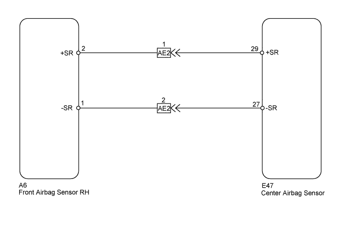
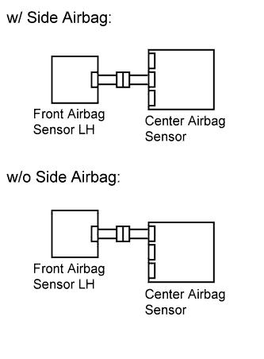

DTC B1610/13 Front Airbag Sensor RH Malfunction |
| DTC Code | DTC Detection Condition | Trouble Area |
| B1610/13 | When one of the following conditions is met:
|
|

| 1.CHECK FRONT AIRBAG SENSOR RH |
 |
Turn the engine switch off.
Disconnect the cable from the negative (-) battery terminal, and wait for at least 90 seconds.
Interchange the front airbag sensor LH with RH and connect the connectors to them.
Connect the cable to the negative (-) battery terminal, and wait for at least 2 seconds.
Turn the engine switch on (IG), and wait for at least 60 seconds.
Clear the DTCs stored in the memory (Click here).
Turn the engine switch off.
Turn the engine switch on (IG), and wait for at least 60 seconds.
Check for DTCs (Click here).
| Result | Proceed to |
| DTC B1610 is output | A |
| DTC B1615 is output | B |
| DTC B1610 and B1615 are not output | C |
|
| ||||
|
| ||||
| C | ||
| ||